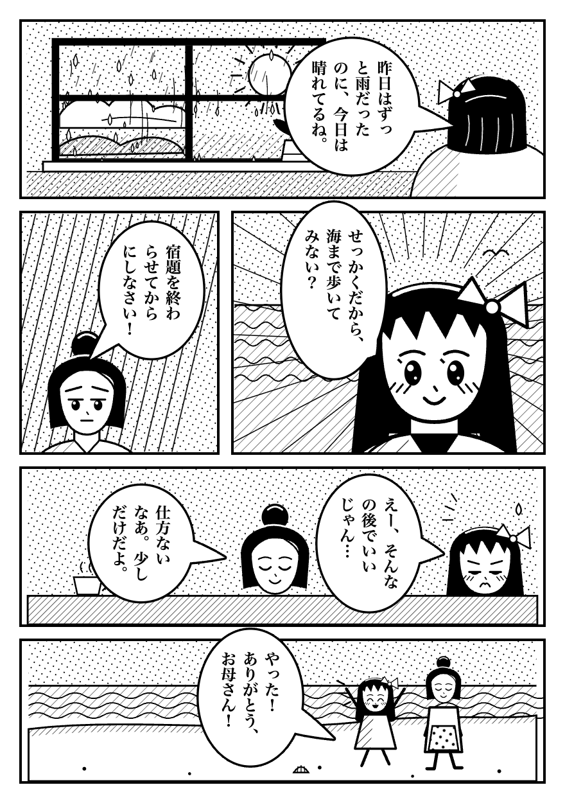

Try Manga OCR & Mining for Anki on this page.
Click the extension icon, press "Enable on this site", wait for the text layer, then click a speech bubble. The page is an original drawing made for this demo.
Back
